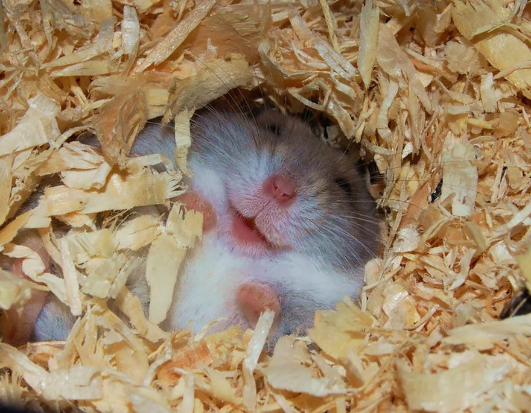

Cuidados

Los hámsteres son mascotas simpáticas que necesitan una jaula amplia y limpia,
una alimentación variada y saludable, agua fresca y limpia, juguetes y caricias
para estimularlos, y atención veterinaria si se enferman. Son animales nocturnos
que duermen de día y se activan de noche, por lo que hay que respetar sus ritmos.
Con paciencia y amor, se pueden convertir en unos compañeros muy fieles y divertidos.